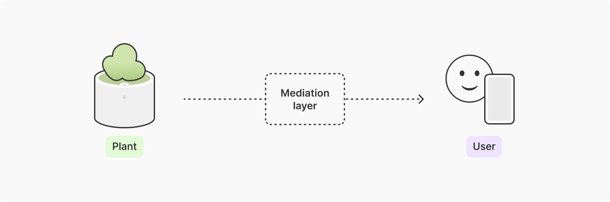
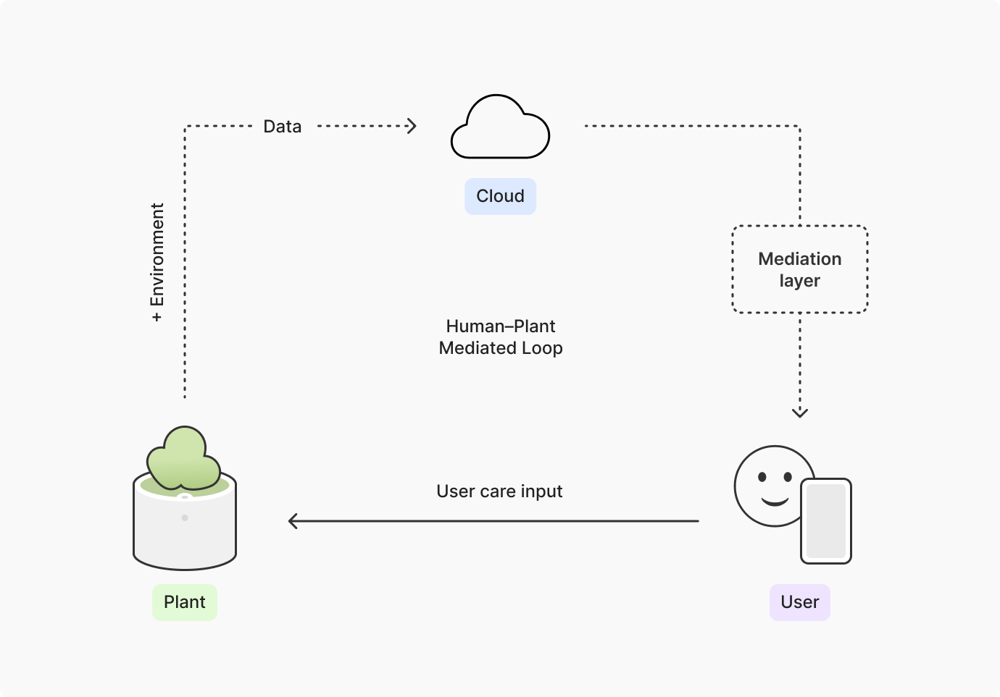
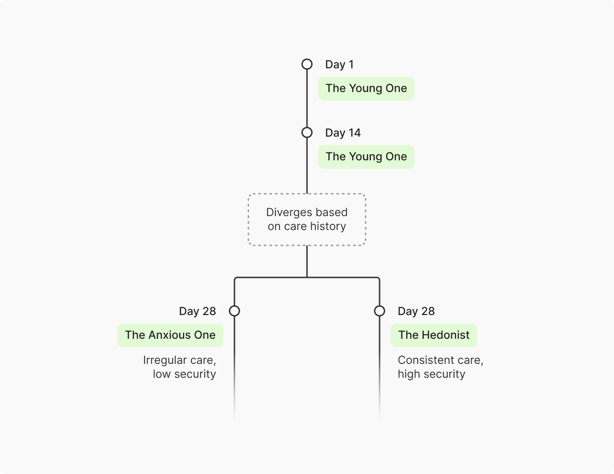
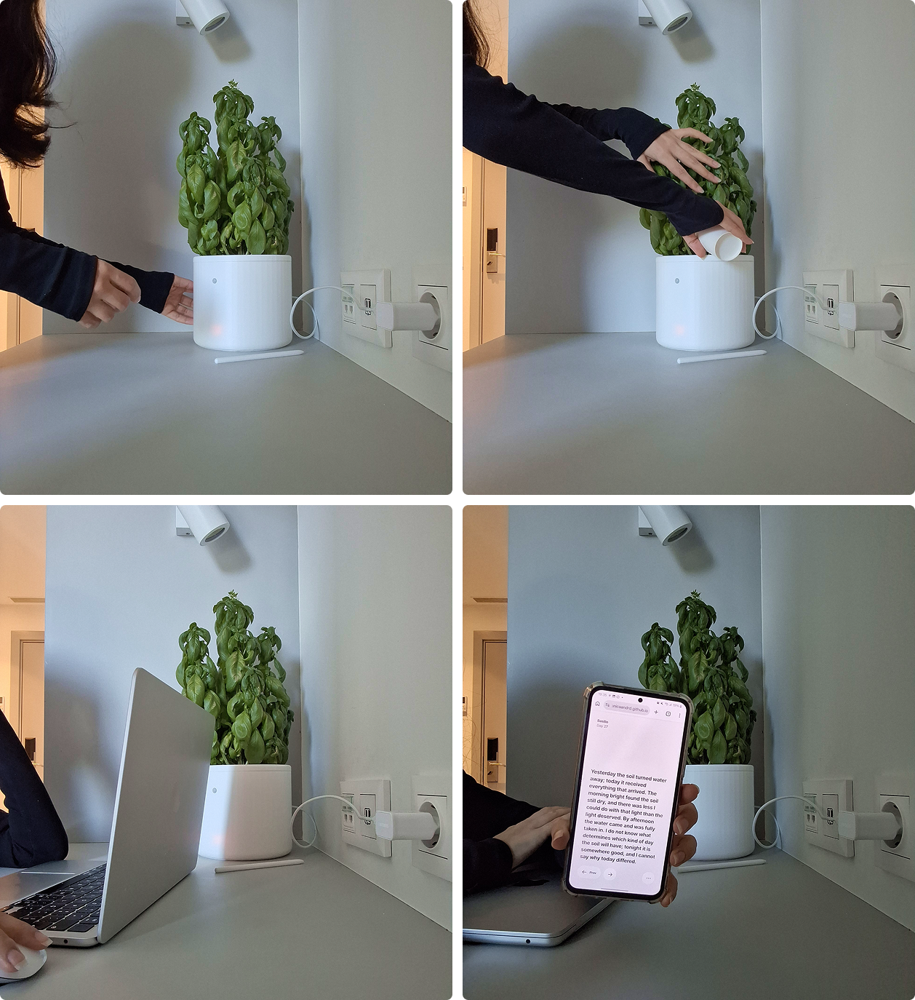

Designing for Things That Can't Talk Back
For a brief moment in the 1970s, the idea that plants might have something to say was taken surprisingly seriously. In 1973, Peter Tompkins and Christopher Bird published The Secret Life of Plants1, a popular book that brought together experiments and claims about plants’ ability to perceive and respond to their surroundings (including some genuinely extraordinary claims about their relationship with humans). In that context, photographs of plants wired to electrodes, sensors and other measuring devices became emblematic of an era defined by the belief that technological mediation could finally grant us access to their secret lives.
Most of that fascination didn't survive scientific scrutiny, as scientists spent the next two decades quietly taking it apart. The claims proved difficult to reproduce, and much of the interpretation leaned heavily on reading human behavior into organisms that are organized in fundamentally different ways. We now know (with considerably better evidence) that plants do communicate through complex chemical and electrical signalling, but not in anything resembling human language. Still, the question remains, just in a more playful register: what if we could talk to plants? And what would they have to say?
That's more or less how I fell down the rabbit hole that became my Master's thesis.
Falling into the rabbit hole
In Nature’s Agents: Chreods, Code, Plato, and Plants, Elizabeth Swanstrom talks about a concept called correspondence2: the idea that technology can offer a way to translate raw data from objects, entities, and features of the natural world into readable signs, allowing them to "communicate" in human terms, and creating new ways of engaging and empathizing with the natural world — whether or not that translation layer even pretends to be literal.

That distinction is what I wanted to design towards, and it's as much a UX question as a conceptual one. If a "plant voice" just becomes a literal read-out (e.g., soil moisture data converted directly into a sentence), you haven't built correspondence, but a very slow notification system with fancy copy. The interaction design had to hold that same line: describe a state, never issue a command, and let the gap between the two do the work. So instead of “can we decode what a plant is saying?”, the question I actually wanted to answer was closer to: “what would it mean to design a relationship with something that can't talk back, without pretending to know what it would say?”
This question became a design problem rather than a translation problem. Working through a research through design approach, and drawing on Betti Marenko and Philip van Allen’s concept of animistic design3 (where everyday objects can become sites for a perceived inner life to emerge through interaction), I started building an artefact to mediate the relationship between a plant and its human caretaker through an imaginative voice grounded in the plant’s environmental data and the care patterns around it.

The solution: a plant's private journal
What I ended up building was a 3D-printed planter, instrumented rather than “smart”, that carries an ESP32 microcontroller wired to sensors tracking soil moisture, ambient light, temperature, air humidity, and movement around the plant (a rough proxy for whether anyone's actually nearby, paying attention). That sensor data, combined with contextual data such as local weather and seasonal phenology, streams over Wi-Fi to a database in real time.
// Temperature + Humidity
sensors_event_t humidity, temp;
aht.getEvent(&humidity, &temp);
// Soil Moisture
int raw = analogRead(soilPin);
int moisture = map(raw, airValue, waterValue, 0, 100);
moisture = constrain(moisture, 0, 100);
// Ambient Light
uint16_t als_raw = veml.readALS();
float lux = veml.readLux();
// Movement
int pirState = digitalRead(PIR_PIN);
// Physical World >> Structured Data >> Real-Time Database
Firebase.RTDB.setFloat(&fbdo, "/sensor/temperature", temp.temperature);
Firebase.RTDB.setFloat(&fbdo, "/sensor/humidity", humidity.relative_humidity);
Firebase.RTDB.setInt(&fbdo, "/sensor/capacitiveSoilMoisture", moisture);
Firebase.RTDB.setInt(&fbdo, "/sensor/light/lux", round(lux));
Firebase.RTDB.setBool(&fbdo, "/sensor/motion", pirState);At the end of each day, that raw data goes through a mediation process and comes out the other side as a journal entry written as if the plant is keeping a private diary, from its own perspective, strictly limited to what its sensors can actually perceive. By default, checking in is entirely on the user's terms: no dashboard, no literal sensor data anywhere in the interface, nothing pushed at you — you open the diary the same way you'd choose to check in on someone. Notifications for new entries exist, but they're opt-in. The default asks something small of the user: show up because you want to, not because something told you to.
The mediation itself (handled by Claude, working from a prompt) runs through three layers of memory — immediate, medium-term, and long-term — which the system reads alongside the day's sensor and contextual data to identify an emergent personality before it writes anything. I didn't want a sunny day to simply produce "today was sunny and I was happy", like a confident voice standing in for something the system doesn't actually have access to, so that personality is built from five parameters (security, richness, age, resilience and orientation — shaped by environmental conditions, the user's actual care patterns and the plant's age) and develops gradually rather than being assigned upfront.
Day 4
Something was present for most of the day, more sustained than before;
when it withdrew, the water came, before dark this time, while there was
still light to use it. The bright had been shorter than I am beginning
to expect, and the theory I was forming about morning here already feels
less certain. Something in the air outside carries a quality I cannot
account for, something urgently accumulating.
[69 words]
The Young One · The Outside Knowing
Security 0.50; Richness 0.04; Age 0.02; Resilience 0.00; Orientation 0.62A plant that gets inconsistent care tends to develop lower security; but if it comes through a stretch of stress intact, it develops more resilience. A plant that's been in your home for a week doesn't behave like one that's been there a year, and the journal needs to reflect that difference, not flatten it. Two plants running the same system, kept by different people under different conditions, end up with distinct personalities — not because those differences were explicitly designed, but because they emerge from the process.

30 days with Basilio
The first 3 days read as uncertain. Basilio seemed to be forming an early theory about the morning light, one it abandoned on day 5 ("the morning brought something less than what I have come to half-expect"). From there, Basilio moved into a mild period of water stress, and soil conditions became a recurring thread in the entries through day 19, before a clear turn on day 20 ("the soil held what arrived tonight; something in its refusal has eased").
The last 10 days told a quieter story, and it's the part I find most telling as a UX result: watering, and the timing of it, visibly shifted. Early interventions had clustered after dark or in the middle of the night (days 2, 6, 14, 18). By the later stretch, they moved earlier (days 23, 25, 27, 30), with light and watering falling into closer alignment on days 26 and 28. Nothing in the journal ever told me to water in the morning; that pattern only makes sense as something I picked up implicitly, over time, from reading entries that never once gave a direct instruction.
Basilio's underlying personality (The Young One, a hesitant, theory-forming archetype) was still recognisably present on day 30, but the tone around uncertainty had changed. The plant crossed its first critical water-stress threshold on day 17, recovered, and crossed the same threshold again on day 30 — and the second crossing was written in a noticeably different register than the first: "I have been at this threshold before."

I want to be honest about the limits here: it was a short window, and I was simultaneously the designer and the sole user of the artefact, which is not a clean separation. But the shift in watering behavior is a real behavioural signal, not just a narrative one, suggesting the diary was doing more than producing pleasant text. It was functioning as a genuine (if quiet) driver of a care routine, without ever presenting any sensor data.
After 30 days with Basilio, the journal certainly didn’t give me access to some hidden plant consciousness (The Secret Life of Plants remained, well, secret). The sensors, the fiction, and the constraints on what the entries were allowed to say — none of it decoded Basilio, but they gave me a reason to keep checking in every day so I could start noticing patterns I might otherwise have missed and changing my own behaviour in response. Maybe this is a more useful way of thinking about designing for things that can’t talk back: not necessarily speaking on their behalf, but occupying the space between worlds and creating the conditions for a relationship to emerge. That feels less ambitious than giving something a voice and probably more honest about how design can contribute to that mediation.
All of Basilio’s journal entries from the 30-day experiment can be found here.